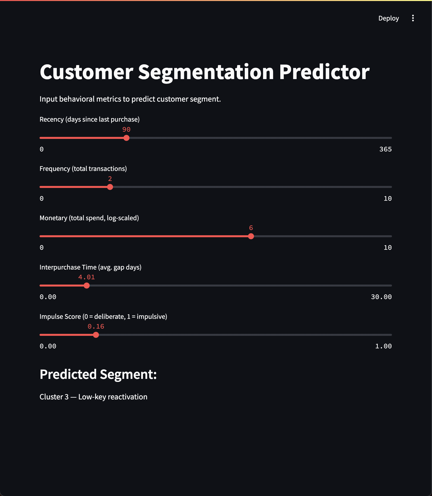

Problem
Despite active customer acquisition, key business indicators such as
conversion and repurchase rates were stagnating, leading to decreased
marketing ROI. The core issue was a one-size-fits-all marketing
strategy that failed to address the diverse behaviors and needs of
different customer groups, making it difficult to maximize Customer
Lifetime Value (LTV).
Action
-
Initial Analysis & Limitation Discovery
-
Started with a standard RFM analysis as an initial hypothesis.
-
However, it revealed a critical limitation: RFM scores treated a
consistently loyal customer and a one-time high-spender
similarly.
-
Failed to capture the crucial nuances of purchasing patterns and
loyalty.
-
Hypothesis Refinement & Behavioral Feature Engineering
-
Formulated a new hypothesis: "Segmentation based on behavioral
timing and tendencies will yield more actionable insights."
-
Designed advanced features beyond RFM, such as 'Interpurchase
Time' and 'Impulse Score'.
- Quantified customer purchase rhythms and tendencies.
-
Data-Driven Segmentation & Persona Definition
-
Applied KMeans clustering to segment customers based on these
newly engineered behavioral features.
-
Went beyond simple clustering by defining data-backed personas
for each of the 5 segments (e.g., 'Core Loyals', 'Impulsive
High-Spenders', 'At-Risk Customers').
-
Actionable Strategy Mapping
-
Developed and mapped differentiated UX/Marketing strategies for
each segment.
-
Defined the optimal message tone (e.g., gratitude vs. urgency),
communication frequency, and channel (e.g., app push vs. email).
-
Aimed to maximize engagement and conversion for each persona.
Result & Business Impact
-
Discovery of 5 Actionable Segments
-
Identified and defined 5 core customer segments, moving from a
vague understanding to a clear, data-driven view of the customer
base.
-
Data-Driven Personalization Strategy
-
Established a framework for targeted strategies. For 'Core
Loyals', proposed loyalty programs to foster community and
increase LTV. For 'At-Risk Customers', designed win-back
campaigns with targeted offers to reduce churn rate.
-
Expected Business Outcome
-
Provided a strategic foundation to shift from inefficient mass
marketing to highly personalized engagement. This approach is
expected to improve key metrics such as conversion rate,
repurchase rate, and ultimately, maximize overall LTV.
-
Operational Automation
-
Built and deployed a Streamlit app capable of classifying new
customers into these segments in real-time, enabling scalable
and dynamic personalization.
Tech Stack
This project engineered behavior-based features beyond traditional RFM
to capture customer purchase dynamics. Using KMeans, customers were
clustered into 5 distinct groups, and actionable personas were defined
for each, leading to the development of a real-time classification
model.
Python
-
Feature Engineering:
pandas,
numpy
-
Modeling & Evaluation:
scikit-learn (StandardScaler, KMeans, PCA,
RandomForest)
-
Visualization:
matplotlib,
seaborn
-
Sentiment Analysis:
vaderSentiment (For persona enrichment)
-
Model Deployment:
pickle,
streamlit

Figure 01: Customer Clusters by Behavioral Features

Figure 02: Real-time Customer Segmentation App
Report
📍 Notebook:
HERE
📍 Real-time clustering app:
HERE
📌 Dataset: UCI Online Retail Dataset (541,909 records)
문제 정의 (Problem)
활발한 신규 고객 유치에도 불구하고 전환율, 재구매율 등 핵심 비즈니스
지표가 정체되며 마케팅 비용 효율이 감소하는 문제 발생. 이는 다양한
고객 그룹의 행동 패턴과 니즈를 고려하지 않은 획일적인 마케팅 전략이
원인이었으며, 고객 생애 가치(LTV) 극대화에 한계를 보임.
나의 기여 (Action)
-
초기 가설 및 한계점 발견
- 1차 가설로 표준 RFM 분석을 수행.
-
그러나 꾸준히 구매하는 충성 고객과 일회성 고액 구매 고객이
유사한 등급으로 묶이는 등,
-
구매 패턴의 미묘한 차이와 충성도를 구분하지 못하는 명확한 한계점
발견.
-
가설 구체화 및 행동 기반 피처 설계
-
'고객의 구매 리듬과 성향을 반영하면 더 실행 가능한 세분화가
가능할 것'이라는 2차 가설 수립.
-
RFM을 넘어 '재구매 주기', '충동 구매 지수' 등 고객 행동의 이면을
파악할 수 있는 핵심 지표를 직접 설계 및 엔지니어링.
-
데이터 기반 세분화 및 페르소나 정의
-
설계한 행동 지표 기반으로 KMeans 클러스터링을 적용, 데이터를
근거로 고객을 5개 핵심 그룹으로 분류.
-
여기서 더 나아가 '핵심 충성 고객', '충동적 큰 손', '이탈 위험
고객' 등 각 군집의 행동/감정 특성을 정의한 데이터 기반 페르소나
수립.
-
실행 가능한 전략 수립 및 매핑
- 각 페르소나에 최적화된 UX/마케팅 전략을 차별적으로 설계.
-
감사 메시지 vs. 긴급성 소구 등 메시지 톤앤매너, 푸시 알림 vs.
이메일 등 채널, 소통 주기 등을 차별화하여
- 각 세그먼트의 전환율을 극대화할 수 있는 실행 계획 매핑.
성과 및 비즈니스 임팩트 (Result & Impact)
-
실행 가능한 5개 핵심 세그먼트 발굴
-
막연했던 고객 이해를 넘어, 명확한 특징을 가진 5개의 핵심 고객
세그먼트를 정의하고 데이터 기반의 고객 뷰 확보.
-
데이터 기반 개인화 전략 프레임워크 수립
-
'핵심 충성 고객'에게는 커뮤니티 강화 및 LTV 증대 전략을, '이탈
위험 고객'에게는 이탈률 감소를 위한 타겟 캠페인을 제안하는 등
즉시 실행 가능한 개인화 전략의 기틀 마련.
-
기대되는 비즈니스 성과
-
비효율적인 전체 메시지 발송에서 벗어나, 세그먼트별 맞춤 접근을
통해 전환율과 재구매율을 실질적으로 향상시키고, 궁극적으로 고객
생애 가치(LTV)를 극대화할 수 있는 전략적 기반 제공.
-
운영 자동화 및 확장성 확보
-
신규 고객 유입 시 실시간으로 세그먼트를 분류하는 Streamlit 앱을
구축 및 배포하여, 분석 결과를 일회성으로 끝내지 않고 지속적으로
운영에 활용할 수 있는 시스템 구현.
기술 스택 (Tech Stack)
전통적인 RFM 모델의 한계를 극복하고자 재구매 주기, 충동성 점수 등 행동
기반 피처를 설계했습니다. K-Means를 활용해 고객을 5개의 군집으로
분류하고, 각 군집의 특성을 해석하여 실행 가능한 페르소나를 정의했으며,
이를 실시간으로 분류하는 모델을 최종 구축했습니다.
Python
-
피처 엔지니어링:
pandas,
numpy
-
모델링 및 평가:
scikit-learn (StandardScaler, KMeans, PCA,
RandomForest)
-
시각화:
matplotlib,
seaborn
-
감성 분석:
vaderSentiment (페르소나
구체화)
-
모델 배포:
pickle,
streamlit
Figure 01: 행동 특성에 따른 고객 군집
보고서 (Report)
📍 노트북 보기:
HERE
📍 Real-time clustering app:
HERE
📌 데이터: UCI Online Retail Dataset (541,909건)